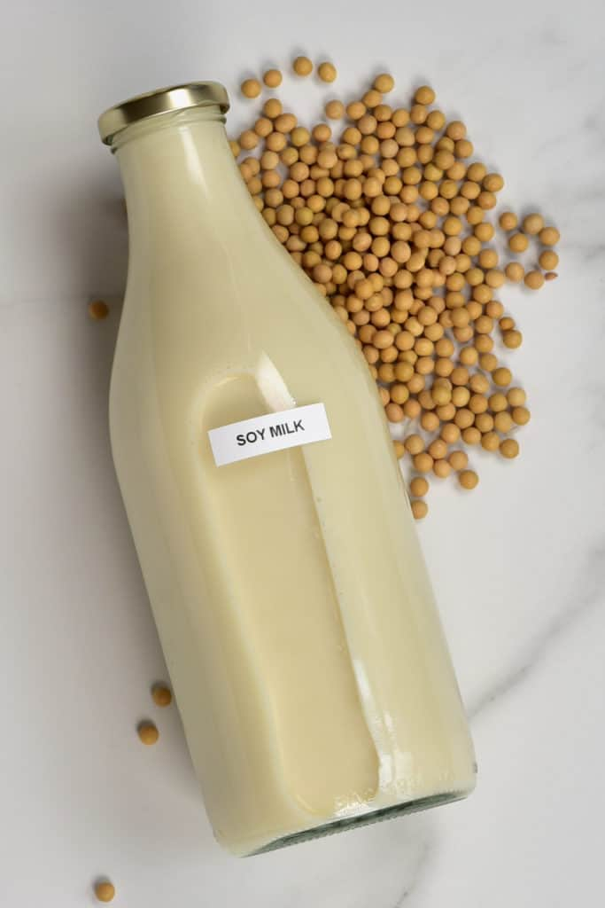
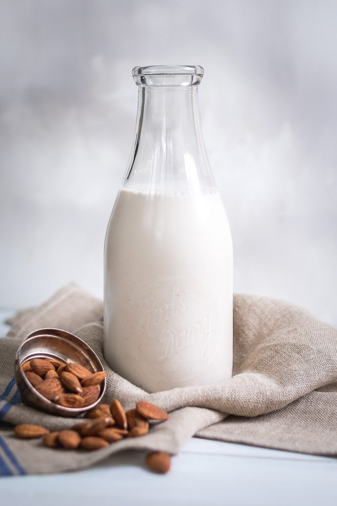
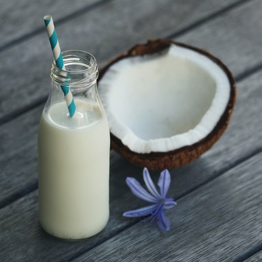
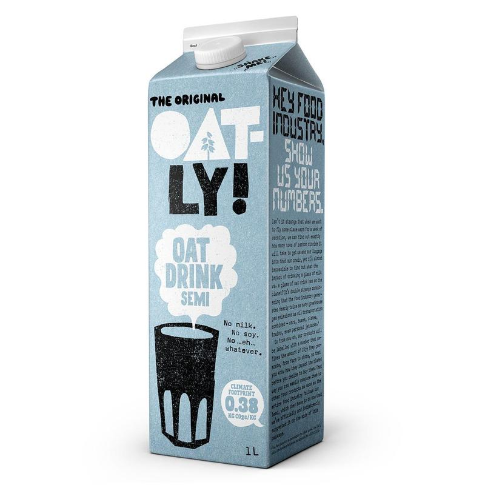
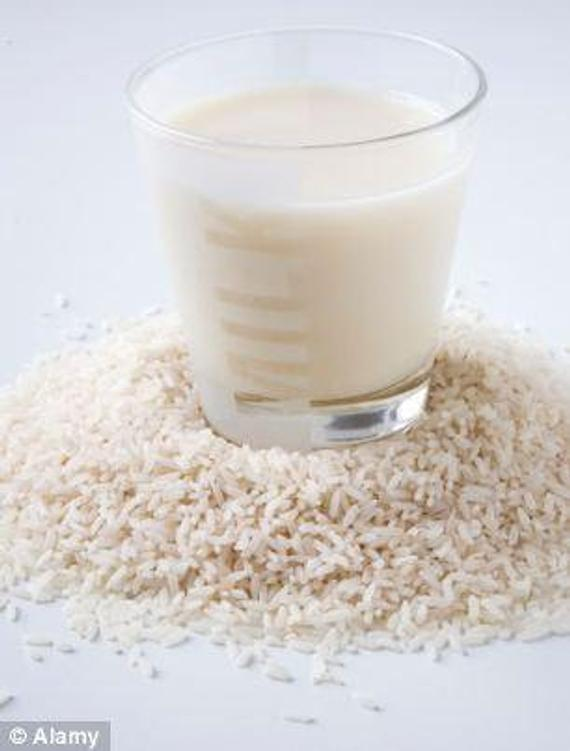

24/06/2020
Soy Milk |
 | Soy milk is probably the most readily available alternative milk at cafes. Soy milk is either made with soybeans or soy protein. With regards to nutrition, soy milk is said to be one of the best non-dairy milk alternatives. It contains a similar amount of protein per glass, but half the number of calories, fats and carbs. Doesn't do great in hot drinks, but still a good alternative. |
|---|---|---|
Almond Milk |
 | Almond milk is another popular alternative. With a slightly sweet and nutty flavour, it is great for plant-based cooking, milkshakes and smoothies. Most almond milk only contains 1-2% of almonds, so it is quite watery. High in vitamins and calcium, but not very high in protein. It also doesn't fair very well in hot drinks. |
Coconut Milk |
 | Coconut milk is really versatile - drinking, cooking... you name it. Personally, I love coconut milk in ice coffee and in milkshakes. It is one of the healthiest alternative milks on the market. It is full of healthy fat, vitamins, minerals and amino acids. However, it is higher in calories than other plant-based milks, and doesn't provide nearly as much protein as dairy milk. |
Oat Milk |
 | OATLY. The King of Alternative Milk in my opinion. Highly nutritious, high calcium, protein and carb intake - so great to add to shakes after the gym or a workout. Creamy, naturally sweet, mild and therefore brilliant in hot drinks - Oatly even has a barista range. Their barista milk is made from liquid oats, which means that the milk is not excessively heavy or chalky. It froths really well. My go to order: Oat Flat White. Heaven. |
Rice Milk |
 | If you're looking for a milk alternative similar to skimmed milk, rice milk is probably the best for you. Made by combining milled white or brown rice with water, rice milk has a light and sweet flavour with a delicate texture. It is popular to add to hot drinks because it barely affects the taste of coffee. Rice milk is the least allergenic of alternative milks, making it suitable for those with allergies and intolerances to gluten, soy, nuts and dairy. |
Email: sophieee.price@gmail.com
Mobile: 07513070268